Models Used¶
- These are a selection of the various models that DEApy can run. First, we define some notation.
- We assume there are
 inputs,
inputs,  outputs and
outputs and  DMUs.
DMUs.
The set of inputs is  ,
the set of outputs is
,
the set of outputs is  and the set of DMUs is
and the set of DMUs is  .
The inputs are represented by a matrix
.
The inputs are represented by a matrix  , where
, where  is a column vector of inputs associated with DMU
is a column vector of inputs associated with DMU  , and
, and  represents the amount the th DMU uses of input
represents the amount the th DMU uses of input  . The outputs are represented by a
. The outputs are represented by a  matrix
matrix  , where 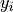 is a column vector of outputs associated with DMU and 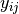 represents the amount the th DMU produces of output . Vector
, where 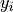 is a column vector of outputs associated with DMU and 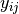 represents the amount the th DMU produces of output . Vector  represents a row vector of input weights, and
represents a row vector of input weights, and  is a row vector of output weights associated with the multiplier form of DEA. Vector
is a row vector of output weights associated with the multiplier form of DEA. Vector  is a column vector of composite weights, associated with the envelopment form of DEA.
Let
is a column vector of composite weights, associated with the envelopment form of DEA.
Let  be a non-Archimedean element, i.e., a number smaller than any positive real number.
Let 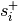 and 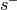 be a vector of slack variables for the outputs and inputs, respectively.
Standard Models
—————
be a non-Archimedean element, i.e., a number smaller than any positive real number.
Let 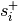 and 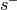 be a vector of slack variables for the outputs and inputs, respectively.
Standard Models
—————
Here are the standard, regular DEA models that can be found in any standard DEA textbook. We used [CSZ04] and [CCLS94].
Multiplier - Input Orientation
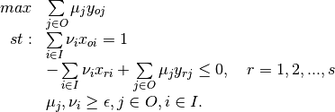
Envelopment - Input Orientation
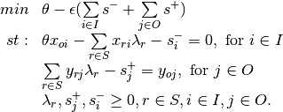
Here, we swap to output orientation - that is, we keep inputs constant, and determine what augmentation in outputs is required for a DMU is become efficient.
Multiplier - Output Orientation
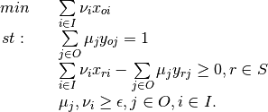
Envelopment - Output Orientation
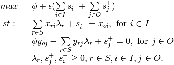
Variable Returns to Scale¶
Previous models assumed that all firms were operating at an optimal scale (the Constant Returns to Scale assumption). Use of this assumption in situations where it is not warranted leads to efficiency scores that includes the effect of scale efficiencies. Hence, the following changes are proposed to create the VRS model:
- The addition of an extra variable to the multiplier model - the sign of this term can provide extra information about the returns to scale on the firms part of the frontier.
- The addition of an extra constraint to the envelopment model - to
ensure the sum of the weights equal one.
Multiplier - Input Orientation, VRS
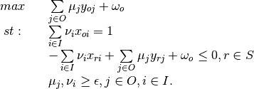
Envelopment - Input Orientation, VRS
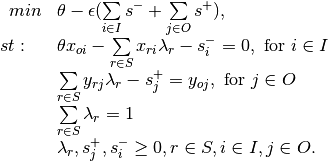
Multiplier - Output Orientation, VRS
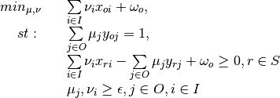
Envelopment - Output Orientation, VRS
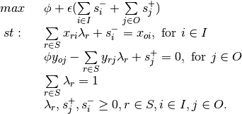
Non-Discretionary Variables¶
Often, the manager of a DMU will only be able to reduce consumption of some of the inputs. For example, consider the case of an electronics factory in China. It is reasonable to assume they can control the usage of variable inputs such as labour and materials, but can’t easy control fixed inputs, such as their land and building size (in the short term). Hence, the question becomes - what reduction in variable input usage can be achieved, given a constant level of outputs and fixed inputs. For notation purposes, if input is discretionary, then 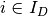, else 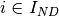. If output is discretionary, then 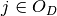, otherwise 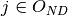.
Multiplier - Input Orientation, non-discretionary Inputs
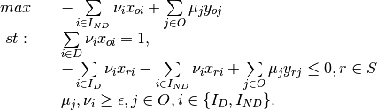
Envelopment - Input Orientation, non-discretionary Inputs
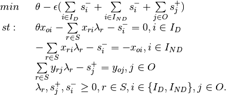
Multiplier - Output Orientation, non-discretionary Outputs
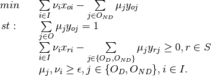
Envelopment - Output Orientation, non-discretionary Outputs
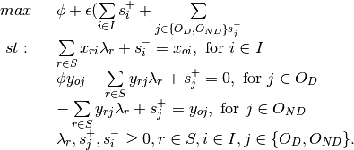
Disposable Variables¶
Previous models have assumed that DMU’s can always discard excess inputs or outputs without cost (known as the assumption of Strong Disposability). This is often advantageous to a firm, as after a certain level each additional unit of input produces a decreasing level of output (law of diminishing returns). Indeed, after some higher level of inputs, additional units of inputs results in a fall in outputs. This is known as input/output congestion. But sometimes external circumstances prevent firms discarding unneeded inputs, such as union agreements preventing a reduction in labour hours. In this case, labour hours would be known as a weakly disposable category, associated with the assumption of Weak Disposability. To incorporate this into DEA models, the following changes have been proposed:
- In the multiplier model, let the weights of the weakly disposable categories be unrestricted in sign.
- In the envelopment model, remove the slack variable corresponding to the weak disposable input/output.
For notation purposes, if input is strongly disposable, then 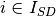, otherwise 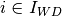. If output is strongly disposable, then 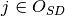, else 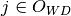.
Multiplier - Input Orientation, Disposable Inputs/Outputs
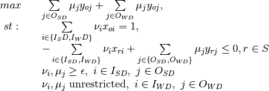
Envelopment - Input Orientation, Disposable Inputs/Outputs

Weight Restrictions¶
Weigth restrictions can be specified by directly adding constraints to the multipliers form.
Assume there are  weight restrictions. The
weight restrictions. The  th weight restriction constraint can be specified
in this form
th weight restriction constraint can be specified
in this form
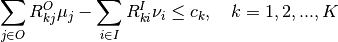
in which 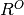 and 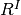 are the coefficient matrices for the weight constraints and vector  specifies the difference between the weighted output minus weighted input.
specifies the difference between the weighted output minus weighted input.
Multiplier model - input orientation with weight restrictions
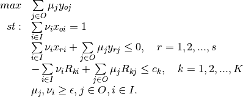
Let the dual variable corresponding to the weight restrictions be vector  .
Then the envelopment form can be shown as follow:
.
Then the envelopment form can be shown as follow:
Envelopment - input Orientation with weight restriction
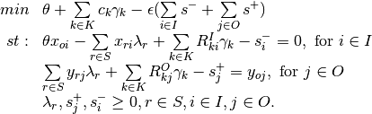
The following subsections show how this general form can be used to represent absolute, virtual and price ratio constraints.
Absolute Weight Restrictions¶
Let 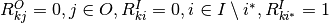, then
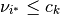
thus if  is positive (negative), then the th weight constraint acts as an upper (a lower)
bound for input 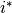. The upper (lower) bonud for outputs can be specified in a similar manner.
is positive (negative), then the th weight constraint acts as an upper (a lower)
bound for input 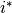. The upper (lower) bonud for outputs can be specified in a similar manner.
Virtual Weight Restrictions¶
A virtual weight restriction on the th input is of the form [WJ90] :
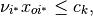
which can be specified by making 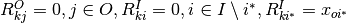.
Note that to be feasible in DEA, must be less or equal to 1
Price Ratio Constraints¶
TODO: I simply converted preice ratio contrsaints to normal contraints and applied usual restrictions as in the models above.
When 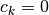, then  and 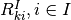 can be used to specify
the price ratio between the inputs and/or the outputs.
and 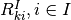 can be used to specify
the price ratio between the inputs and/or the outputs.
For example, let 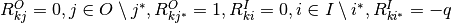, then we obtain a constraint
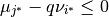
which specifies that the price ratio of and must not greater than  .
.
Note that the ratio can be made to involve multiple inputs and/or outputs by
putting more than one non-zero entries in  and/or
and/or  .
.
Categorical Analysis¶
Often, DMUs will not be directly comparable with each other (i.e. Retail stores in a built up urban area might find it easier than those in a semi-rural area). This requires users to put the DMU into categories, then rank the categories, from “least favourable” to “most favourable”.
The algorithm is as follows. DMUs with category 1 are considered first and compared only to each other. Then DMUs with category 1 and 2 are considered, and so on. Hence, category 1 is least favourable, category 2 is more favourable and so on, for example, see [Cooper2007].
Two Phase¶
When conducting DEA, it can be non-trivial to determine the value of .
Alternatively, one can solve the DEA model in two phases without defining .
The first phase solves a DEA model without slack variables to obtain an optimal efficiency score
( or
or  ) and the
second phase solves a DEA model with the efficiency score fixed and maximises the slack variables.
The idea is demonstrated in the following input-oriented envelopment model.
) and the
second phase solves a DEA model with the efficiency score fixed and maximises the slack variables.
The idea is demonstrated in the following input-oriented envelopment model.
Phase 1:
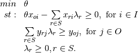
By solving the phase 1 problem, we obtain the efficiency score  .
In phase 2, the efficiency score is fixed and the slack values are maximised.
.
In phase 2, the efficiency score is fixed and the slack values are maximised.
Phase 2:
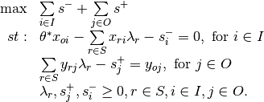
Super Efficiency¶
The algorithm that I use is very simple: go through all DMUs as usual, but before solving DEA model, remove DMU from the list of DMUs, and add it back after solving. I cannot find the reference where this algorithm come from, most likely from a book that I borrowed from Andrea or from the library.
For a variety of reasons, super efficiency is implemented differently in the multiplier method than the envelopment method. This is obviously not preferable, and will be changed in later versions. First we define some notation. If a DMU is efficient, there are two cases: either there exists a convex combination of other DMUs that performs no worse than it (in which case the DMU is said to be “efficient but no extreme efficient”), or there exists no convex combination, in which case the DMU is said to be “Super efficient”. Below we identify methods to determine which category the DMU belongs in.
In the envelopment method, super efficiency is implemented through the scaling method outlined in [LR03]. They use the standard scaling method given below, but their contribution is to provide a method to identify a lower bound for a scaling factor  , such that increasing past this bound makes no difference to the results. Refer to the scaling method below.
, such that increasing past this bound makes no difference to the results. Refer to the scaling method below.
This method is not preferred for a couple of reasons. Primarily, when weight restrictions are applied, the right hand sides of these must be scaled in non obvious ways. Secondly, when weak disposability is implemented, this scaling of inputs can result in a firm being scaled from the part of the frontier that bends backwards to a part that does not, affecting the efficiency score. Below is an alternate method, which can be found in any standard DEA textbook.
Peeling the Onion¶
When a DMU is not efficient it might be interesting to investigate if it is close to being efficient in the sense that it becomes efficient when all currently efficient solutions are removed. Peeling the onion refers to iteratively resolving the DEA problems and removing currently efficient solutions after each iteration. One obtains a ranking of tiers of DMUs, rank 1 refers to a DMU that is efficient. DMUs that become efficient when those of rank 1 are removed are rank 2. Rank 3 DMUs are efficient when rank 1 and 2 DMUs are removed, etc. This is described in [BDS00] and [SZ03]. The process is outlined below:
Input: Set of DMUs, inputs, outputs
Output: efficiency scores, peel-the-onion ranking
 = set of DMUs
= set of DMUsCurrentRank = 1
- While 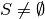Solve DEA for each of the DMUs in with DMU set in Foreach 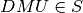 doIf DMU is efficient thenRecord rank of DMU as CurrentRankRemove DMU fromEndEndCurrentRank = CurrentRank + 1End
Limits on models¶
Some combinations of features are not yet functional. These include the following. Any of the multiplier models cannot run with two-phase.
Also, slack maximization and weight restrictions is not allowed, because it is an unbounded problem.
References¶
| [Cooper2007] |
|
| [CSZ04] |
|
| [CCLS94] |
|
| [LR03] |
|
| [BDS00] |
|
| [SZ03] |
|
| [WJ90] | Y.-HB. Wong and J.E. Beasley. Restricting weight flexibility in data envelopment analysis. Journal of the Operational Research Society 41-9 pp. 829-835, 1990. |